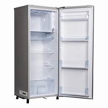
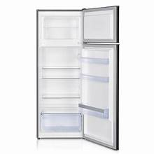
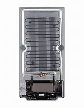
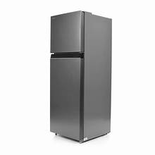

This image shows the inside of a refrigerator with multiple shelves and storage compartments. The organized design helps keep food items fresh and properly arranged. Different sections are available for fruits, vegetables, and beverages. The cooling system maintains an ideal storage temperature.
This image highlights the refrigerator door section. The door compartments provide additional storage space for bottles, beverages, condiments, and other frequently used items. This design improves convenience and accessibility. It also helps maximize storage capacity.
This image displays the refrigerator's cooling coils located at the back. These coils help remove heat from the appliance and maintain the required cooling temperature. Efficient cooling ensures food remains fresh for longer periods. The system also improves energy efficiency.
This image shows the complete exterior design of the refrigerator. Its compact and modern appearance makes it suitable for kitchens, offices, and homes. The durable construction ensures long-lasting performance. The elegant design enhances the overall look of the space.